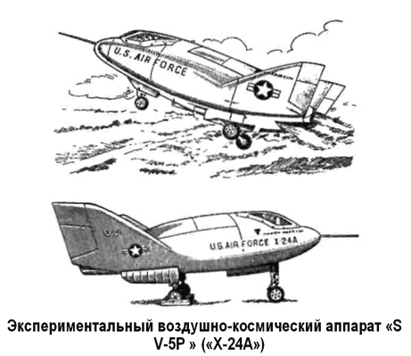
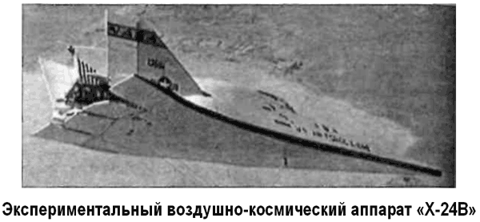

Космический челнок «SV-5» («Х-24»)
В августе 1964 года ВВС объявили о начале программы «Старт» («START» от «Spacecraft Technology and Advanced Reentry Program»). Эта программа была призвана объединить все существующие проекты планирующих аэрокосмических аппаратов.
Она целиком вобрала в себя результаты, полученные по программам ракетопланов «Х-15» и «Х-20», а также ряд работ по исследованиям входа головных частей баллистических ракет в плотные слои атмосферы.
Вскоре среди участников программы выделилась фирма «Мартин», разрабатывавшая проект космического челнока «СВ-5» («SV-5»), который планировалось использовать для перевозки экипажей и грузов по трассе Земля — Орбитальная станция — Земля.
Космический корабль «SV-5» имел стреловидную «лодкообразную» форму и тупой нос почти сферического сечения.
Кривизна верхней поверхности значительно больше, чем нижней. Три вертикальных стабилизатора имели рули направления.
Управление тангажем осуществлялось элевонами, которые были дифференциально связаны для управления маневром с креном.
На режимах входа в атмосферу, где аэродинамических рулей недостаточно, использовались реактивные сопла. Предполагалось, что неравномерное разрушение абляционной защиты будет сильно сказываться на работе рулей управления.
По экономическим соображениям первые суборбитальные полеты планировалось осуществить на кораблях «SV-5» небольших размеров весом от 200 до 900 килограммов, без системы спасения. Одновременно с гиперзвуковыми испытаниями моделей было решено проводить летные испытания большого пилотируемого корабля «SV-5» на устойчивость и управляемость на дозвуковых режимах и на отработку посадки.
Первый летный эксперимент с беспилотной моделью «SV-5D» весом 405 килограммов (называемой также «Prime» — «Прима») был осуществлен 21 декабря 1966 года и закончился неудачей. Аппарат, запущенный по суборбитальной баллистической траектории с помощью ракеты-носителя «Атлас», после входа в атмосферу упал в океан, и спасти его не удалось.
Второй запуск, 5 марта 1967 года, также оказался неудачным.
Только при третьем запуске, 19 апреля 1967 года, экспериментаторы заполучили свою обгоревшую модель.
Помимо беспилотного аппарата, фирма «Мартин» разработала еще два варианта воздушно-космического самолета: учебный «SV-5J» с воздушно-реактивным двигателем и пилотируемый «SV-5P» для орбитального полета. В конце 1967 года программа «Старт» претерпела серьезные изменения и соответственно поменялись обозначения разрабатываемых аппаратов. Так, «SV-5D» стал называться «Икс-23» («Х-23»), a «SV-5P» — «Икс-24» («Х-24»).
В конечном виде экспериментальный аппарат «Х-24А» имел следующие характеристики: полная длина — 7,5 метра, максимальный диаметр — 4,2 метра, полная масса — 5192 килограмма, масса топлива — 2480 килограммов, тяга двигателя — 3845 килограммов, компоненты ракетного топлива — жидкий кислород и спирт, время работы двигателя — 225 секунд.
Летные испытания «Х-24А» продлились с 17 апреля 1969 года по 4 июня 1971 года, всего состоялось 28 полетов.

При этом экспериментальный аппарат сбрасывался с самолетаносителя «В-52». В ходе летных испытаний «Х-24А» достиг максимальной скорости в 1,6 Маха и максимальной высоты в 21 800 метров.
По результатам этих испытаний был построен экспериментальный воздушно-космический аппарат «Х-24Б» («Х-24В»), который позволил бы выйти на большие скорости и высоты с целью дальнейшего совершенствования аэродинамики и компоновки планера Характеристики «Х-24Б» были таковы: полная длина — 11,4 метра, максимальный диаметр — 5,8 метра, полная масса — 6258 килограмма, масса топлива — 2480 килограммов, тяга двигателя — 4444 килограмма, время работы двигателя — 225 секунд.
Во время летных испытаний, продолжавшихся с 1 августа 1973 года по 26 ноября 1975 года (64 полета в атмосфере, старт — с самолета-носителя «В-52») была достигнута скорость в 1,76 Маха и высота в 22400 метров.

Программа испытаний не была доведена до конца, поскольку как раз в то время была инициирована программа космического корабля многоразового использования «Спейс Шаттл» и проект двухступенчатой аэрокосмической системы с вертикальным стартом «Х-24 плюс Титан III», который обсуждался на этом этапе, пришлось отложить.
В результате были остановлены не только летные испытания «Х-24В», но и работы над двумя экспериментальными воздушно-космическими аппаратами «Икс-24Си» («Х-24С»), один из которых собирались снабдить парой прямоточных воздушно-реактивных двигателей, а другой — жидкостным ракетным двигателем «XLR-99», оставшимся в наследство от ракетоплана «Х-15». Конструкторы фирмы «Мартин» рассчитывали провести цикл испытаний этих аппаратов, включавший более чем 200 полетов, и достичь скоростей порядка 8 Махов. Однако 200 миллионов долларов, затребованные ими, так и не были никогда выделены.
Впрочем, некоторые историки считают, что работы над новыми образцами «Х-24» никто не прекращал и они продолжались еще некоторое время в режиме повышенной секретности — так называемый «черный проект».